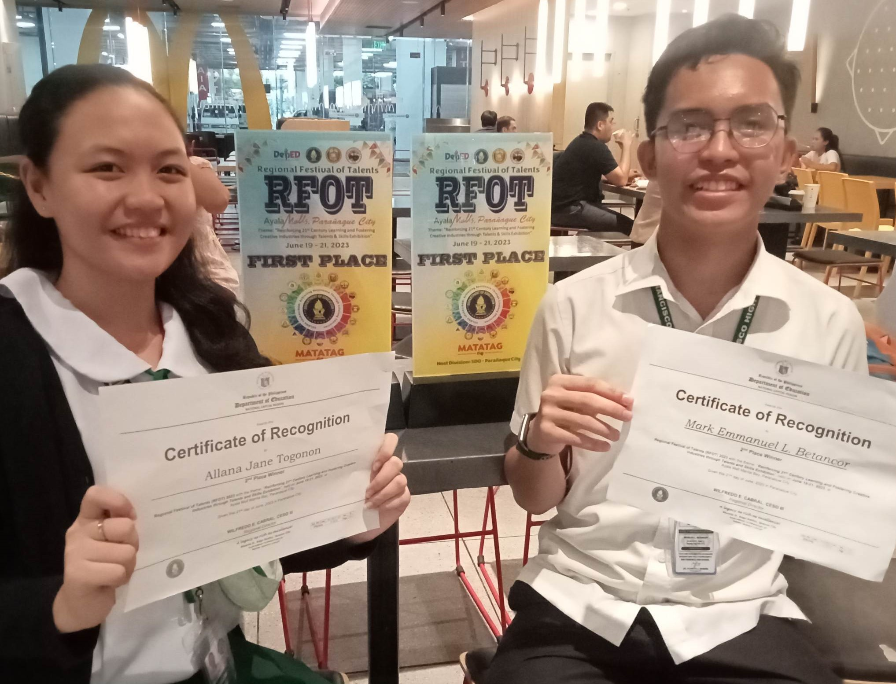
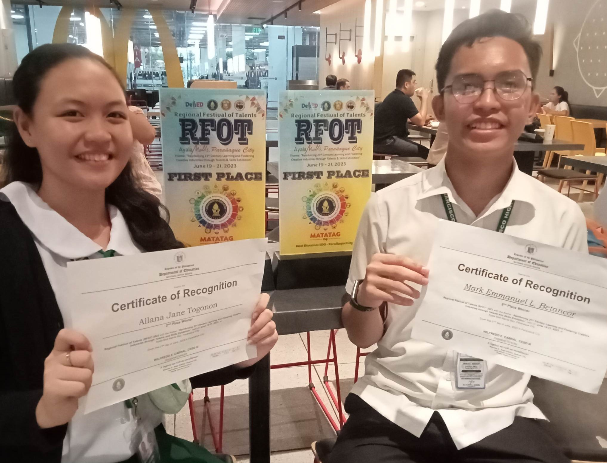
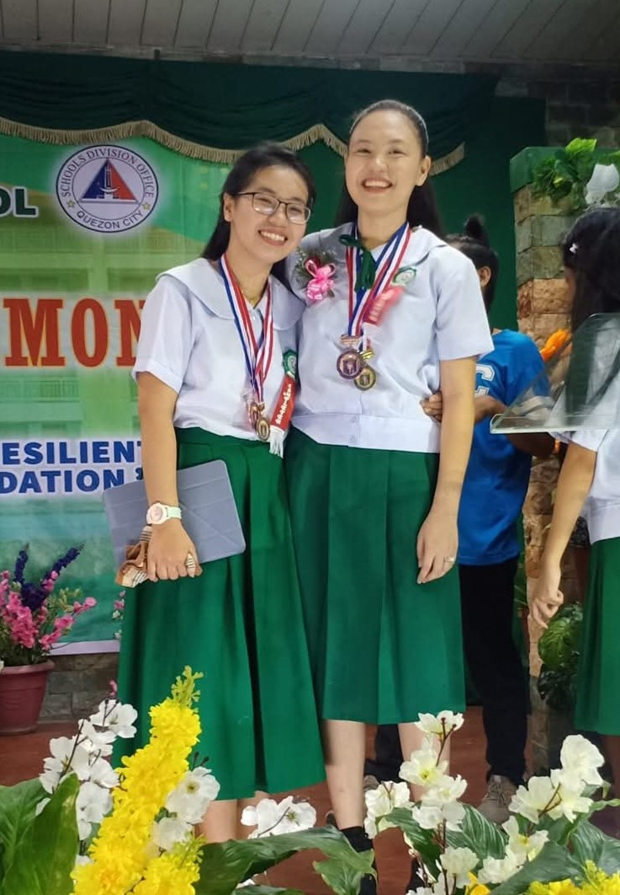
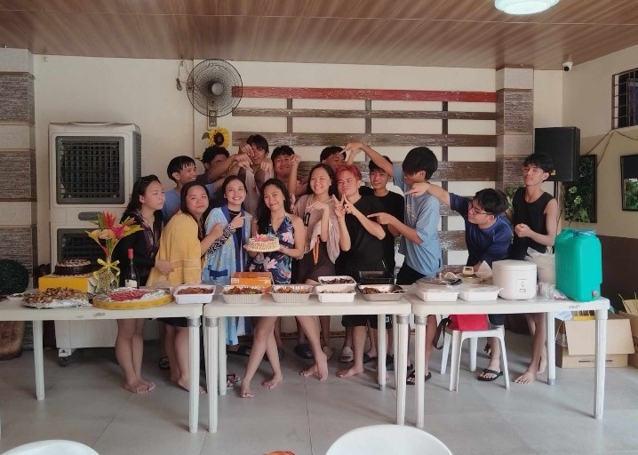

During our school’s Chinese Spring Festival event, we joined several
contests, including the Chinese dubbing competition where we won 2nd
place! It was such a fun and exciting experience, and all the days we
spent preparing were definitely worth it.

I was chosen to represent our school in the Division Festival of Talents
under the Mandarin Lingo Stars category. I portrayed Mulan and
recited famous lines highlighting her characteristics. The preparation
was stressful, tiring, and challenging, but it was also exciting and
truly rewarding. All the hard work paid off as I won 1st place for our school.
 

After the Division Festival of Talents came the Regional Festival of Talents,
which was held in Parañaque. It was such a nerve-wracking experience
to represent our school at this level. Although I didn’t win 1st place, I’m still
proud of my performance because I gave my best, and earning 2nd place
was already a great achievement.

Our JS Prom was such an exciting and memorable event. I was enthusiastic
about it, and we all had so much fun enjoying our time together. It felt
even more special knowing that these were some of our last moments as
a section, since our moving up is near and some of us will soon be
taking different courses or even transferring to other schools.

Our Moving Up ceremony finally came, and it was truly a moment of mixed
emotions, both happy and sad. We were excited to reach this milestone, but at
the same time, it was hard to accept that our section would no longer be the
same. We had been together for so many years, and we had grown so used to
each other that it felt different and bittersweet to part ways.

This is me with my best friend. I felt both joyful and sad that day, we
finally moved up to become senior high students, but she will be transferring
to another school, which means I won’t get to see and talk to her every day
anymore. It made me quite nostalgic, yet I was still proud of us because
we both received two awards that day.

This was our work immersion, and I was assigned to my former elementary
school, which made the experience very memorable. I was placed in the office,
where we helped the principal's assistant in organizing the canteen pricing
and school documents. Everyone I worked with was very friendly and did a great
job, making the experience even better. It was both fun and meaningful, especially
since we were also given with free food. The place and the teachers felt very
familiar, some still remember me even after all those years.

In our 21st Century activity, my partner and I cosplayed as Frieren and
Himmel from the anime Frieren: Beyond Journey’s End. It was such a fun and
creative experience that allowed us to bring the characters to life.


This was our Christmas party at school with the theme ‘Disco Ball.’ We
had so much fun playing games, dancing, and simply enjoying our
time together. After the party, we went to a friend’s house where we
continued the celebration with more activities, laughter, and moments
to treasure. Later that night, we decided to go Christmas caroling, singing in
front of many houses and receiving generous amounts of money in return. It
was such a joyful and memorable experience, filled with music, laughter, and
togetherness. We were truly grateful for that night, it was a special Christmas
day that we will always cherish.

Our research journey was full of stress and challenges, but in the end,
it was all worth it. We even gathered at a friend’s condo to work together, and
at our group mate's house to conduct our experiment. There were many late
nights spent finishing the paper and the experiment, but the teamwork made
the experience memorable. It taught us the value of patience, cooperation,
and hardwork.


During our Grad Ball, I was chosen as a candidate for Ms. Queen of the
Night. To my surprise, I even made it to the Top 5, which was something
I honestly didn’t expect. Although I didn’t win, the experience was
unforgettable, I was nervous at first, but I still had so much fun
dancing and laughing with my friends. It was definitely a night to
remember and a perfect way to celebrate our journey together.

This is our whole class, taken during our graduation practice. It made us
realize that our senior high school days are almost over. With college just
around the corner, we were already busy applying to different universities.
Around this time, we were also planning our bonding outside school and our
graduation celebration with our circle of friends. It was a bittersweet
reminder that a new chapter is about to begin.

Just after our graduation, we also celebrated our friend’s birthday along
with our graduation. We shared a feast, sang karaoke, went swimming, and
had late night talks together. Some of us even cried when the celebration
ended and it was time to go home, since many of us had known each other
for years. That day was truly nostalgic and memorable, it felt special because
it was our last complete moment together before moving on to college and
the busy life ahead.
← Back